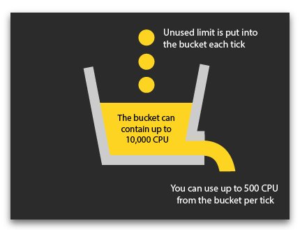

Screeps 游戏引擎有两种运行模式：一种是基于浏览器的单机模式，比如主页上的 sim 。另一种是基于服务器的联机模式。尽管两种模式以游戏的角度看来没有差别的，且所能调用的 api 都是一模一样的，但执行玩家代码的方法不同。单机模式下，代码都是由浏览器本地执行的，并不需要任何云端服务器的参与。
而在联机模式下，代码的执行完全由云端的服务器负责而非本地浏览器，为了方便管理，我们提供了名为 CPU 时间的资源，您可以由此使用游戏服务器上的 CPU 资源。
在理解游戏循环、游戏时间、 ticks 中，我们提过这个游戏是由很多 tick 构成的。每一 tick ，游戏引擎会执行所有玩家的代码。但 tick 的时长并不固定的——只有当所有玩家的代码被执行后，服务器才会结束这 tick。
CPU 限制
为了避免玩家的代码执行时间过长而影响游戏的流畅性，我们引入了 CPU 限额。其本质是以毫秒为单位来限制代码执行时长， 100 CPU 意味着玩家的代码最多可以执行 100 毫秒，当 100 毫秒到后，无论代码是否执行完全都会被强行终止。玩家默认有 20 CPU ，但可通过订阅增加 CPU ，具体增量跟玩家的 GCL 挂钩。
库存
方便起见，玩家每 tick 所省下的 CPU 会被存在 bucket 中以备不时之需。这样，玩家仍可执行超过其 CPU 限制的代码。

如果玩家的代码在 CPU 限制内执行完了，那么其剩余的 CPU 便会被存起来。玩家最多可以存 10,000 CPU ，但每 tick 最多可用 500 CPU 。
举例来说，如果玩家的 CPU 限制为 150，但其代码每 tick 只要 100 CPU 就执行完了，那么剩下的 50 CPU 则会被存在 bucket 中。因此，用省下的 CPU ，玩家可以每 5 tick 执行一个需要 250 CPU 的大型代码，或每 200 tick 连续执行五个各需要 500 CPU 的超大型代码。
Game.cpu.tickLimit 便为玩家此 tick 最多使用的 CPU 量。当玩家的 Game.cpu.bucket 存满了后， Game.cpu.tickLimit 便为上限 500 。这个最多多用量只会在玩家 Game.cpu.bucket 快见底后减少，且 Game.cpu.tickLimit 永远不会小于你的 CPU 限制 （Game.cpu.limit）
因此，玩家根据 CPU 储量，可以保证其需要消耗大量时间的代码（比如寻路代码）不被中断。